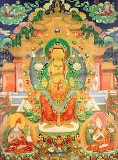

Будда Майтрейя в переводе означает "Дружелюбный", "Благожелательный", "Любящий" В иконографии Грядущего Будду изображают в нескольких формах. Часто он сидит в европейской позе на возвышении, похожем на трон или кресло (бхадрасана). Такое положение указывает на то, что Майтрея намерен спуститься в наш мир. С возвышения смотрит вниз, в мир, куда он придёт, чтобы развеять тьму неведения распространением Дхармы. Корона на его голове венчается небольшой ступой. Ступа есть символ выражение почтения Учению Будды Шакьямуни. Тело Майтреи изображают золотисто-жёлтого цвета. Руки сложены в дхармачакра-мудре (жест изложения буддийского учения) которые поддерживают два лотоса, на лотосах покоятся Колесо Закона дхармачакра, символ распространения истинного Учения и сосуд с нектаром - нектар Дхармы, дарующий бессмертие.
Иногда Майтрею изображают на белом коне. Иногда сидящим в традиционной позе Будды, с перекрещенными ногами, либо в лалита-асане. Майтрея символизирует любящую доброту будд и бодхисаттв, святую любовь.
Он ― грядущий Татхагата (Великий Будда), прихода которого ожидают после Будды Шакьямуни. Каждый год в его честь служиться одна из главных буддийских служб Майдар-хурал.